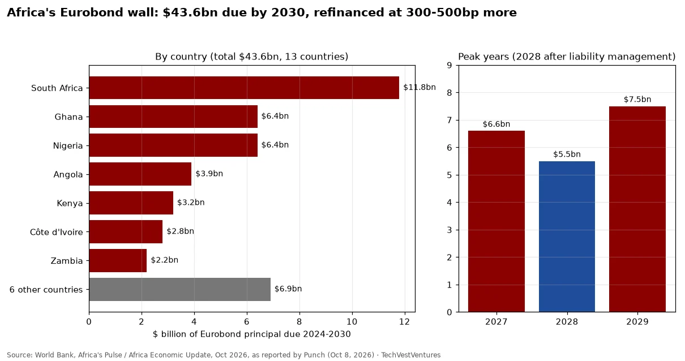

Q3. Emerging Markets
Weekly Focus graphs, started Oct 25, 2026: new charts are added each week from primary or clearly named secondary data. Each caption names its sources and its caveats.

The World Bank's October 2026 Africa update puts sovereign Eurobond principal maturing in 13 sub-Saharan countries in 2024-2030 at about $43.6bn. South Africa, Ghana and Nigeria carry 56% of it; the other six countries together about $6.9bn (our residual). The heaviest years are 2027 ($6.6bn) and 2029 ($7.5bn). The bank's warning is about price, not just size: 2024 reopening bonds yielded 7.1-10.4%, 300-500bp above pre-2022, and carry only 5-6-year tenors, so the cliff comes back sooner. Example: Kenya refinanced a 6.9% coupon bond at 10.4%. Caveat: we could not reach the World Bank report itself, so the figures are as quoted by Punch.
Sources: Punch, 'Nigeria faces $6.4bn Eurobond repayment burden - World Bank', Oct 8, 2026